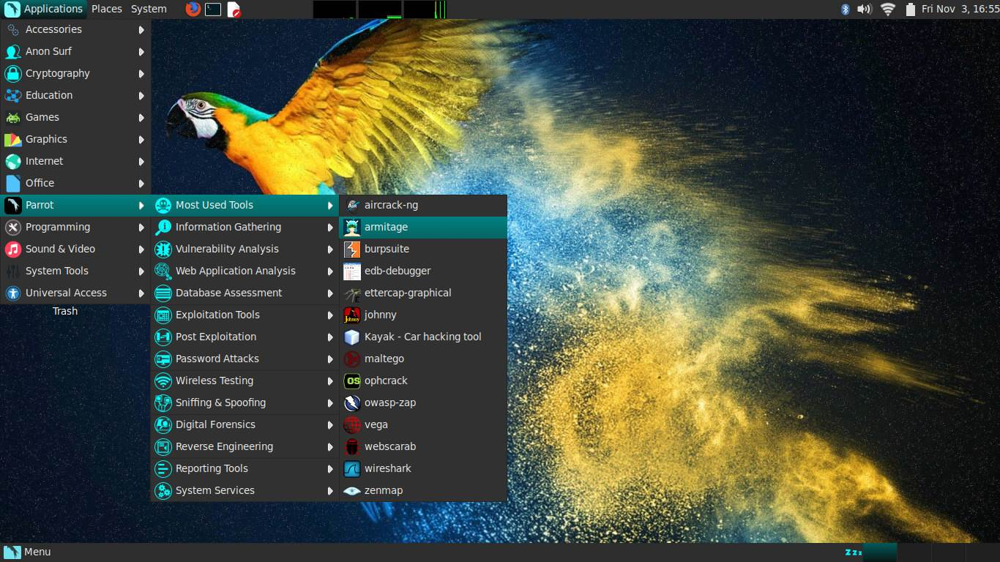

Best OS for Hacking ( Ultimate Guide)
Cyber security is ever-changing. Picking the best OS for hacking is vital for ethical hackers and security pros.
This article delves into why choosing a pre-built hacking OS is better than setting one up—especially for beginners. We look at different OSs, like Kali and Parrot, and will delve deep into each hacking operating system by discussing their unique features, maintenance, and highlights.
Learn about the benefits of these hacking OSs and which meet specific system needs for virtual machines, live boot environments, and bare-metal installations.
Why Use a Hacking Operating System?
Using pre-built hacking systems like Kali, BlackArch, and similar ones can be more useful and straightforward than building your hacking system from scratch. These OSs save time with pre-set tools and settings and are all designed for ethical hacking. Creating your own custom system can be challenging and time-consuming, especially for beginners.
Plus, hacking systems must keep up-to-date with cyber security changes. Pre-built OSs come with regular updates from a dedicated team/community of seasoned professionals solving this issue.
Also, these systems are pre-tested; Kali and ParrotOS, for example, offer compatibility with various hardware setups.
Another plus of pre-made systems is that groups of cyber security professionals contribute their knowledge, resulting in an upgraded, more reliable, and ready-to-use toolset. This makes this kind of OSs a handy tool for anyone in ethical hacking, whether they are beginners or experienced users.
1.KALI LINUX

Kali Linux is a strong, multi-use hacking operating system. It's open-source and made specifically for penetration testing, ethical hacking, and checking network security. Created by OffSec, it's now a global team project where many security pros play a part. Kali gives users a complete kit with loads of pre-set tools, sorted into groups like information gathering, vulnerability analysis, and wireless attacks.
Regular updates mean Kali always has the most recent hacking tools. You can install it on virtual machines, live boot systems, or even bare-metal systems. It's easy to use and has a large online community for support, resources, and tutorials. This makes it suitable for both newbies and seasoned users.
Kali Purple is also notable. This specialized Kali Linux operating system variant focuses on advanced wireless penetration testing and security assessments, combining both the red and blue team aspects of Kali.
Kali Linux's dedication to accessibility, improvement, and community involvement solidifies its top-ranking position worldwide as a hacking OS.
System Requirements
Hard Disk: A minimum of 20 GB hard disk space for installation, depending on the version.
RAM: A minimum of 2 GB RAM for i386 and AMD64 architectures.
CPU: A minimum of an Intel Core i3 or an AMD E1 processor for good performance.
Installation Guide of Kali linux
2.PARROT OS
Commonly called ParrotOS, Parrot Security OS is a Linux system built for privacy and security-focused tasks, which is rapidly gaining popularity thanks to being the main OS for HackTheBox and CEH labs/exam. The Parrot Project team develops and looks after it, giving cyber security pros and fans what they need. It's known for being light and handy in different tech settings. You can use it in virtual systems, live boot setups and regular installs.
What sets ParrotOS apart is its dedication to user privacy and remaining unnoticed online. It offers AnonSurf for safe web usage and hiding your network. There's a select set of pre-installed pen testing tools included. The Parrot Project regularly releases updates to ensure users have the latest tools and security patches.
On the technical side, ParrotOS has a user-friendly design created to be efficient. It's smooth for everyone, from beginners to professional security users. The distribution promotes teamwork and contributions through forums and guides, aiming for a team-focused atmosphere.
But its uses go beyond just ethical hacking. ParrotOS also serves as an educational system, giving users a managed setting to build their cyber security knowledge. Simply put, ParrotOS is a practical hacking OS. It includes the main values of safety, privacy, and easy access in the world of information security and penetration testing.
System Requirements
Hard Disk: A minimum of 400MB of hard disk space for installation is required.
RAM: Parrot OS can run on machines with 512 MB of RAM, but the project's creators strongly recommend at least 2 GB.
CPU: A minimum CPU equivalent to an Intel Core i3-2100 for good performance.
Installitation Guide of Parrot OS
3.CAMMANDO VM
Commando VM is a unique hacking system by Mandiant, a leading cyber security firm. It's a Windows-based system built specifically for penetration tests and red teaming in Windows environments and Active Directory. This system has a handpicked set of security tools for spotting and taking advantage of vulnerabilities in Windows systems. Commando VM smoothens the path for security experts working in exclusively Windows environments by supplying a whole set of tools focused on checking the security of Windows networks, apps, and services.
Mandiant’s work on Commando VM ensures it follows the newest cyber security trends and top practices. Its tools work across a large range of functions, from network scanning and exploitation/post-exploitation, to data extraction. Commando VM is easy to use and has a direct interface, perfect for new and experienced users. System Requirements
Hard Disk: A minimum of 80 GB of hard disk space for installation is required, but more is recommended.
RAM: CommandoVM runs on machines with at least 4 GB of RAM.
CPU: Any medium-level CPU capable of running Windows 10 smoothly will do the job.
Installation Guide of Commando VM
4. BACK BOX
BackBox Linux is a project of the BackBox Team. It's designed for testing computer systems and finding security holes. It’s based on Ubuntu, with an easy-to-use interface and built-in ethical hacking tools. The Team consistently enhances the system's abilities and effectiveness. Its small size makes it ideal for many settings, like virtual machines or live boot sessions.
Teamwork among security experts is a core focus of BackBox. It offers numerous tools that promote cooperation and sharing of information. Fresh tools and features are regularly added through updates.
What sets BackBox Linux apart is its flexibility. It caters to both newcomers and pros seeking a fresh platform for pentesting. The operating system comes with automation and scripting tools to simplify tasks. Therefore, BackBox Linux is a fantastic asset for individuals aiming to boost computer and network security toolkit (NST). System Requirements.
Hard Disk: A minimum of 10 GB of disk space is needed just for installation.
RAM: BackBox Linux needs no less than 1 GB of RAM.
CPU: Almost any modern (even low-level) 32-bit or 64-bit CPU.
Installation Guide of BACK BOX
4. Black Arch
BlackArch Linux is a specialized penetration testing and security assessment distribution. Behind this OS is BlackArch Project, a team focused on constant improvement. Specifically made for ethical hackers and cyber security experts, it’s packed with over 2,600 tools ready to be used. The BlackArch Project keeps this open-source project fresh, with updates matching changes in the cyber security scene.
This OS, lean and flexible in design, adapts to many situations. Built on the Arch Linux framework, BlackArch offers users a continuous flow of tools and updates, thanks to a rolling release strategy. The makeup of its ideology invites users to add tools, detect and report problems, and have a hand in the OS's future decisions.
BlackArch is all about simplicity with a clean interface and a minimalist design. With a focus on hacking tools and being community-driven, BlackArch stamps its identity as a handy kit in the realm of security tests and ethical hacking.
System Requirements
Hard Disk: A minimum of 10 GB of disk space is needed for installation, but at least 15 GB are suggested.
RAM: A minimum RAM requirement to run it is 6GB.
CPU: A 4-core CPU from the last six years is required.
Installation Guide of BLACK ARCH
4. SAMURAI WTF
Samurai Web Testing Framework, or SamuraiWTF, is freely available software purpose-built for checking the safety of web apps. The SamuraiWTF team, operating through a community setup, constructs and perfects it. The framework incorporates helpful resources and codes, all selected for web pen testing and ethical hacking. It's based on a Linux system and houses unique tools meant for different stages of a webapp assessments, reconnaissance, discovery, exploitation, and post-exploitation.
SamuraiWTF includes popular web-app pen testing tools like OWASP Zap and Burp Suite, which help form a complete tactic to spot and manage any vulnerability in webapp. On top of that, SamuraiWTF takes pride in its easy-to-use format, making it simple for both new and experienced hackers.
The community members regularly offer improvements, thus keeping the OS up-to-date with the constantly changing demand of cyber security. This framework enables cyber security experts to imitate real-world threats on web apps, helping in detecting and averting possible safety threats safely and responsibly. SamuraiWTF, thanks to the project's cooperation and commitment to community development, serves as a helpful tool for web application security testing.
While specific information about SamuraiWTF’s system requirements is hard to find, here you can find general system requirements for VMs of that kind, that we calculated for you and that are more than enough to run it smoothly.
Hard Disk: A minimum of 20-30 GB of free hard drive space is typically recommended for the virtual machine and associated tools.
RAM: A minimum of 4 GB of RAM is often recommended, though having 8 GB or more can significantly improve the performance.
CPU: A multi-core processor with at least two cores is suggested.